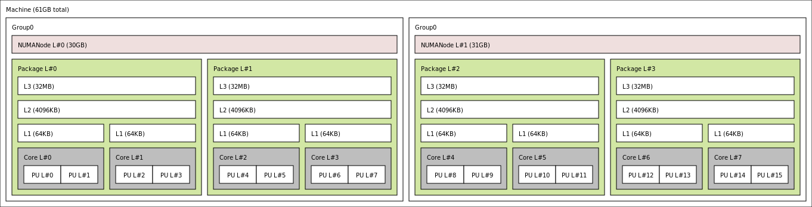
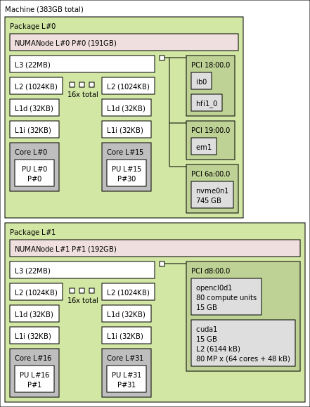
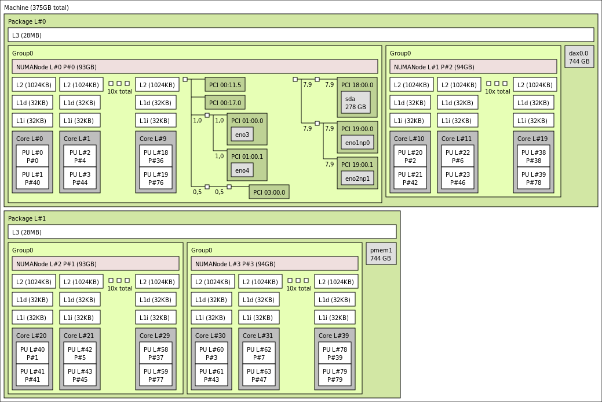
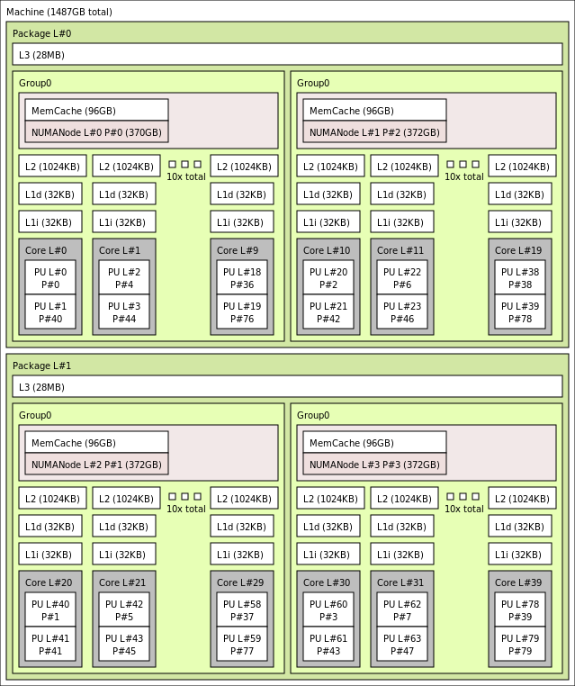
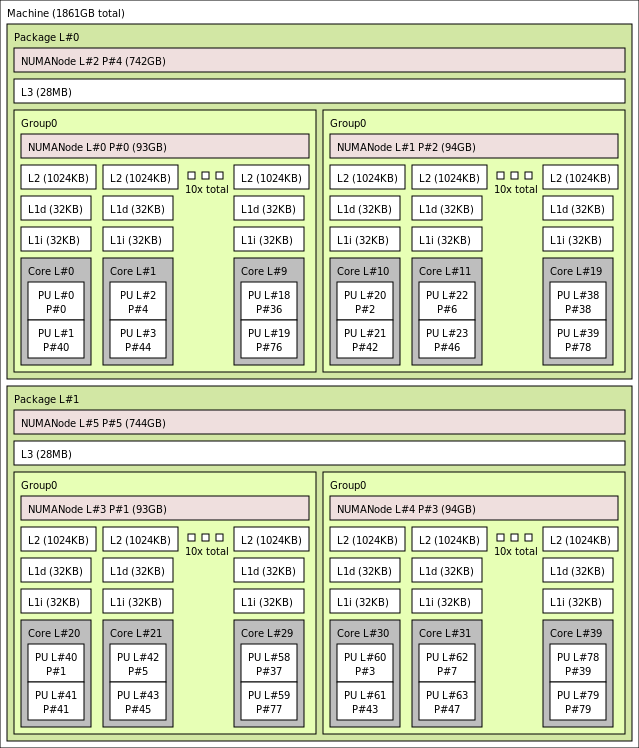

Portable Hardware Locality
Portable Hardware Locality
In a nutshell
The Portable Hardware Locality (hwloc) software package provides a portable abstraction (across OS, versions, architectures, …) of the hierarchical topology of modern architectures, including NUMA memory nodes, sockets, shared caches, cores and simultaneous multithreading. It also gathers various system attributes such as cache and memory information as well as the locality of I/O devices such as network interfaces, InfiniBand HCAs or GPUs.
hwloc primarily aims at helping applications with gathering information about increasingly complex parallel computing platforms so as to exploit them accordingly and efficiently. For instance, two tasks that tightly cooperate should probably be placed onto cores sharing a cache. However, two independent memory-intensive tasks should better be spread out onto different sockets so as to maximize their memory throughput. As described in this paper, OpenMP threads have to be placed according to their affinities and to the hardware characteristics. MPI implementations apply similar techniques while also adapting their communication strategies to the network locality as described in this paper or this one.
hwloc may also help many applications just by providing a portable CPU and memory binding API and a reliable way to find out how many cores and/or hardware threads are available.
Examples of outputs
61 GB, 8 Cores

383 GB, 32 Cores

375 GB, 40 Cores

1487 GB, 40 Cores

1861 GB, 40 Cores

The hierarchical topology map of the current system
# hwloc-ls
Machine (16GB)
Package L#0 + L3 L#0 (30MB) + L2 L#0 (256KB) + L1d L#0 (32KB) + L1i L#0 (32KB)
Core L#0 + PU L#0 (P#0)
Core L#1 + PU L#1 (P#1)
Misc(MemoryModule)
HostBridge L#0
PCI 8086:7010
Block(Removable Media Device) L#0 "sr0"
PCI 1013:00b8
GPU L#1 "card0"
GPU L#2 "controlD64"
PCI 1af4:1000
PCI 1af4:1001
The information about the given objects
# hwloc-info
depth 0: 1 Machine (type #1)
depth 1: 1 Package (type #3)
depth 2: 1 L3Cache (type #4)
depth 3: 1 L2Cache (type #4)
depth 4: 1 L1dCache (type #4)
depth 5: 1 L1iCache (type #4)
depth 6: 2 Core (type #5)
depth 7: 2 PU (type #6)
Special depth -3: 1 Bridge (type #9)
Special depth -4: 4 PCI Device (type #10)
Special depth -5: 3 OS Device (type #11)